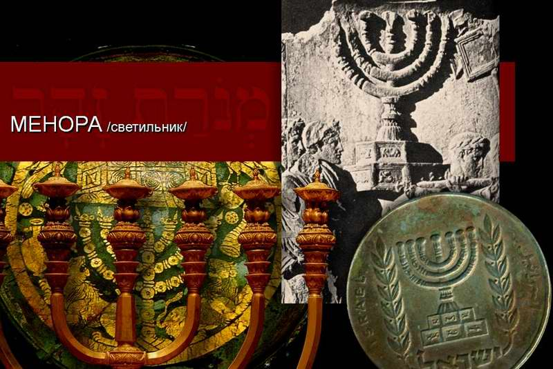
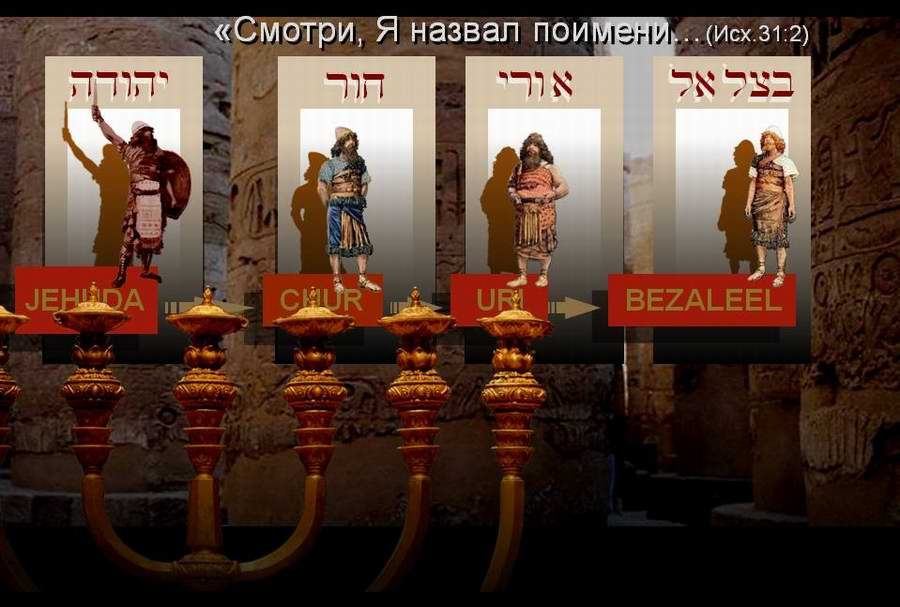
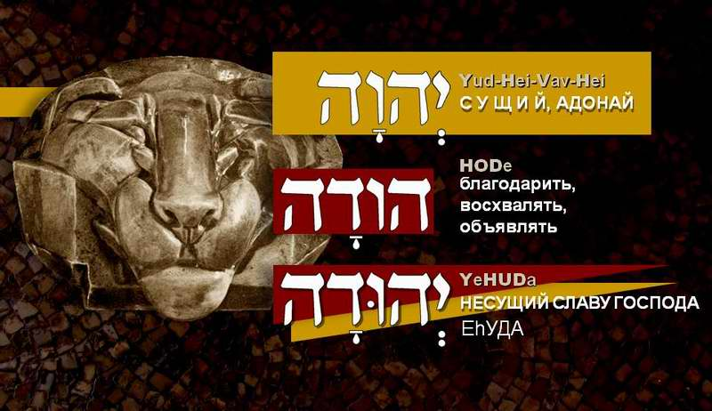
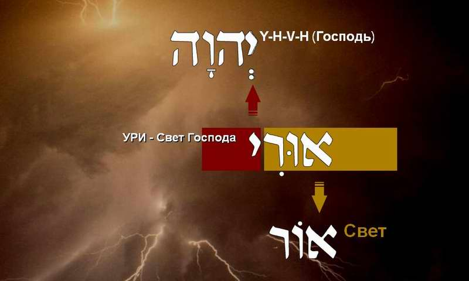
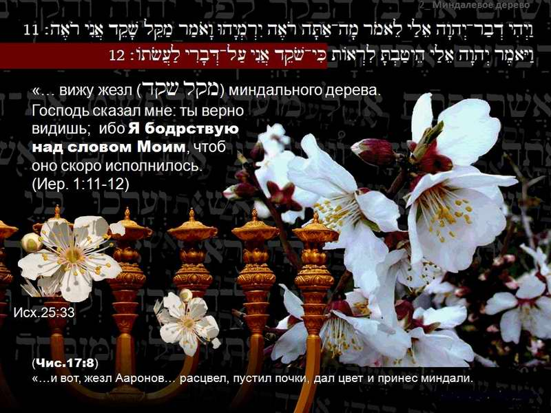

МЕНОРА - СИМВОЛ ШКОЛЫ Бецалеля
Поговорим о МЕНОРЕ (Исх. 25:31-37), самом известном произведении первого израильского художника Бецалеля. Этот светильник можно назвать фирменным знаком всей Школы Бецалеля. Создание его было непростой задачей по «конвертации» небесной реальности в материальные образы, доступные для понимания общины Израиля. Светильник должен был являть собой славу Всевышнего. И создать его мог только художник, призванный и одаренный Самим Предвечным.
МЕНОРА - СИМВОЛ ШКОЛЫ Бецалеля. В этом сюжете рассматривается программное произведение Бецалеля — светильник для святилища (семисвечник). В нем как в капле воды отражается суть всего творчества Бецалеля и основанной им Школы творчества.
Студия "Тора-Арт". TORAART.com
Эфраим Калиш: ШКОЛА БЕЦАЛЕЛЯ.
г.Ярославль 2013
ДРЕВНИЙ СИМВОЛ
Менора, пожалуй, самый известный из всех еврейских символов. И самый древний из них. Другой подобный символ, который прямо ассоциируется с Израилем и еврейством, — маген-Давид («щит Давида», более известный как «звезда Давида») — гораздо более позднего происхождения.
Именно эти два символа представлены в наше время как государственные символы Израиля: на флаге страны — звезда Давида, на гербе — менора.
Многочисленные изображения МЕНОРЫ с древности до наших дней можно встретить на каменных рельефах, мозаиках, монетах, витражах христианских соборов и синагог.

Менора на арке Тита — самое древнее изображение, к тому же это единственное из всех творений Бецалеля, сделанных им около 3,5 тыс. лет назад, дошедшее до нас.
От художника Бецалеля требовались все его мудрость, мастерство, ведение и разумение, чтобы исполнить в точности то, что повелел ему Бог через Моше. Даже для последнего эта задача была не из легких. Мидраш говорит о недоумении Моше, когда Всевышний показал ему небесный мишкан (скинию).
Трудность заключалась в том, что небесную реальность, которую человек не способен передать словами, необходимо было «конвертировать» в материальные образы, доступные для понимания общины Израиля. Задуманное назначение светильника — являть собой славу Всевышнего (Шехину), и Моше не мог постигнуть, как именно это возможно сделать.
Мидраш сообщает о том, что Всевышний, говоря с Моше на горе Синай, показал ему в видении огненную менору. Очищенное золото, помещенное Моше в огонь, силой Всевышнего превратилось в семисвечник.
Только после окончания работ по устроению мишкана израильтяне приступили к созданию светильника.
Не случайно Творец призвал художника, способного осуществить Его замысел. Для этой цели Всевышний наполнил его Своим Духом в мудрости, ведении и разумении. Он же одарил его талантами во всех потребных для сего искусствах. И невозможное для человека стало возможным в сотворчестве с Творцом вселенной.
Отражение МЕНОРЫ в имени Бецалеля

Послание, заложенное в меноре, находит свое отражение в имени Бецалеля — мастера, ее создавшего.
Призвание Всевышним Бецалеля по имени (см. Исх. 31:1-2) можно понимать и как призвание его предков от Еhуды до деда Хура и отца Ури. Сам Всевышний в предведении Своем назвал по имени, т.е. дал имена, предкам Бецалеля и ему самому. Он соткал как искусный ковер все его родословие, от начала предопределив и его призвание.
Тот же, Кто призвал его по имени, показал и Моше образ Небесного и небесную менору, Им сотворенную. Всевышний от начала знал и действия, и их назначение. Он вложил важное послание, совершенный закон, в имя Бецалеля. Он знал, как из рук избранного Им художника выйдет образ небесной меноры, несущей в себе качества самого ваятеля.
Как любое произведение искусства обладает отпечатками пальцев его создателя, так и менора несет в себе частицу личности Бецалеля.
Он сам и его родословие запечатлелись в этом произведении.
Ехуда - глава колена, в котором поднялся род Бецалеля
Весь светильник был сиянием и символом cлавы Господней. О ней говорит имя Еhуда — «несущий славу Божью».
Семь ветвей светильника указывают на Божественное совершенство и полноту — Божественную субботу.

Хур - дед Бецалеля
Имя Хур означает «очищенный». Менора была сделана из очищенного, «испытанного» огнем золота. Используемый в светильнике чистый выбитый елей, получаемый из лучших, специально отобранных маслин, также указывает на деда художника.
И то обстоятельство, что менора представляет собой особый жертвенник в Скинии, наряду со столом и жертвенником кадильным, отсылает нас к деду художника, который, согласно преданию, отдал жизнь свою на жертвенник во имя Господне, решив до конца хранить верность Призвавшему его.
О елее сказано, что он должен быть זך ‹зах› — «чистый», «ясный». Только просветленный, очищенный от «примесей» низменных страстей, дух человека становится способен общаться с Духом Господним.
Есть еще одно необходимое качество елея в Писании: כתית ‹кати́т› — «выбитый», от глагола כתת ‹ката́т› — «бить», «разбивать». Многими «ударами» — страданиями и испытаниями — подготавливается наш дух к общению с Богом. Этот образ можно рассматривать как параллельный «сокрушенному духу» и «сокрушенному сердцу» (см. Ис. 57:15).

Ури – отец художника
Имя Ури означает «свет Господа». Так Бецалель — сын света Господнего, т. е. тот, кто рожден от Духа Господнего и просвещен Его светом, — светом, который всегда должен был исходить от семисвечника.

Имя Бецалель
Имя Бецалель означает «по подобию Бога», и оно отражается в идее светильника — символа и своего рода образа Божьего. Всевышний вложил в художника мудрость вникнуть в Его замысел, дал разумение познать себя (закон своего имени и призвание). Он тот, Кто вложил в сердце его ведение учить других .

ИДЕЯ МЕНОРЫ:
Миндалевое дерево.
Менора устроена по подобию миндального дерева как зримого символа слова Господнего. Именно на миндаль Всевышний указывает как на символ Своего бодрствования над словом.
Как и на жезле Аарона, в меноре сочетаются цветок, завязь и плод, что вместе указывает на Божественную полноту и совершенство Его слова.

ВИДЕНИЕ ПРОРОКА ЙЕРЕМИЯhУ
11 И было слово Господне ко мне: что видишь ты, Иеремия? Я сказал: вижу жезл миндального дерева.
12 Господь сказал мне: ты верно видишь; ибо Я бодрствую над словом Моим, чтоб оно скоро исполнилось.
11 וַיְהִי דְבַר־יְהוָה אֵלַי לֵאמֹר מָה־אַתָּה רֹאֶה יִרְמְיָהוּ וָאֹמַר מַקֵּל שָׁקֵד אֲנִי רֹאֶה׃
12 וַיֹּאמֶר יְהוָה אֵלַי הֵיטַבְתָּ לִרְאוֹת כִּי־שֹׁקֵד אֲנִי עַל־דְּבָרִי לַעֲשֹׂתוֹ׃
Так сам Йермияhу убеждается в том, что Всесильный, произнося слово, бодрствует над ним, чтобы оно исполнилось в точности.
Ободрение Господа было крайне важно для молодого пророка. Ведь, призывая его, Всевышний заранее предупредил о том, что слова его пророчества не будут приняты. «Несмотря на то, что тебя не будут слушать, твое служение — говорить слова, которые Я повелю тебе. Я — Господь, и Я бодрствую над Своим словом, чтобы оно исполнилось!»
***
Бог уподобил Бецалеля светильнику. Подобно меноре, наполняемой маслом, Бецалель был наполнен Духом Божьим.
Не только художник отразился в своем произведении, но и менора (ведь она есть духовная реальность) отразилась в его жизни. Она сделала его таким, каков он стал, — светильником, отдающим свой свет учения через творчество.
Менора — «визитная карточка», концентрированное выражение подхода к творчеству в Школе Бецалеля (после призвания на служение Бог повелевает Бецалелю основать школу). Этот светильник — программное произведение Школы, содержащее в себе учение. Небесная менора озарила судьбу и служение Бецалеля Предвечному. Это актуально и для нас сегодня, дабы наше творчество было отблеском ее света, отражением…
автор: Эфраим Калиш /TORAART/
ЕСЛИ ЭТОТ МАТЕРИАЛ БЫЛ ВАМ ПОЛЕЗЕН, ПОЖАЛУЙСТА, ПОДЕЛИТЕСЬ ИМ С ДРУЗЬЯМИ
читайте также по теме:
БЕЦАЛЕЛЬ — СЫН СВЕТА. Призвание. ч.I БЕЦАЛЕЛЬ (Веселеил) — СЫН СВЕТА. Под покровом Всевышнего, ч.II БЕЦАЛЕЛЬ — СЫН СВЕТА. Свет Господень, ч.III БЕЦАЛЕЛЬ (Веселеил) — СЫН СВЕТА. Дед ХУР, ч.IV БЕЦАЛЕЛЬ — СЫН СВЕТА. Славящий Бога, ч.V Призван быть ОЧИЩЕННЫМ. Дед Бецалеля — ХУР --- Школа Бецалеля. ПРИЗВАНИЕ УЧИТЬ Школа Бецалеля. РОДИТЕЛЬ Школа Бецалеля. Сердце учителя БЫЛИ РУКИ ЕГО — ВЕРА /Исх.17:12/. Художник и вера Святилише — МИШКАН и МИКДАШ Бецалель. МЕНОРА — знак школы Прямое ПОПАДАНИЕ В ЦЕЛЬ